東京初日：晴空塔生活圈與 HTC RE 盲拍記
記憶存檔（原旅程隨筆）
規劃一個要去拜訪的點，到處繞繞，直到在巷弄裡撞見自己很想吃的那一家小吃或小店，這才是旅行最有意思的節奏。
這趟行前在連線裝備上下足了功夫，一口氣準備了兩台 Wi-Fi 分享器與一張 SIM 卡：分別是 WiHo（日本 WiHo! 4G JP-SU 藍鑽石）、Horizon（Y!Mobile 三刀流 MAX），以及一張 J-Walker SIM。實際用下來，WiHo 大概因為在租借市場太熱門、頻繁操勞，電池續航力明顯不如 Horizon；SIM 卡表現則中規中矩。整體來說追求速度與穩定，Wi-Fi 機依舊是首選；SIM 卡則贏在輕便不用多帶一顆尿袋。不過當時若是 HTC 手機的支持者，挑 SIM 卡還得特別比對一下頻段支援（畢竟那幾年大家對國產 h 牌還是挺死忠的）。
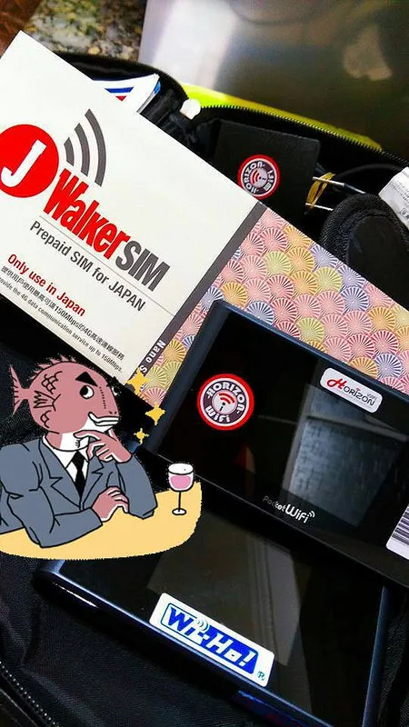
拿著華航哩程換來的免費機票，出發前幾經思量，最後把目的地從首爾轉向了東京。搭上飛機離開地面、穿過厚重雲層 Fly High 的那一刻，心情總是一瞬間被徹底放空。
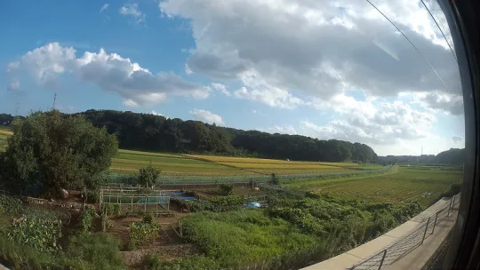
航程中有個溫馨的小插曲：同班機有一對帶著小嬰兒搭機的年輕爸媽，起飛前客氣地向周遭乘客逐一發送手寫小卡與糖果。座艙裡一位資歷二十多年的資深空服員直呼，飛了二十幾年第一次遇到這麼貼心感動的家長（或許是跑日本線久了，表達情緒的方式也變得有些日式放大）。不過話說回來，那個小寶寶在整趟航程中其實都安靜得出奇，完全沒吵到任何人。
抵達機場後，不趕時間的我選擇搭上停靠站多、速度慢但票價便宜的普通電車（京成電鐵線）。車窗外從成田郊區的農田村落一路晃進千葉市鎮，再緩緩滑入東京都下町，周遭流動的庶民生活景觀本身就是旅途的收穫。把晃蕩的時間拉長一點，反而顯得剛剛好。
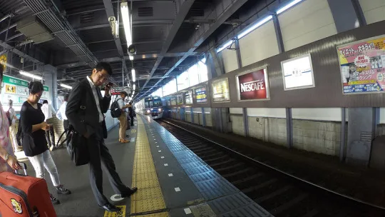
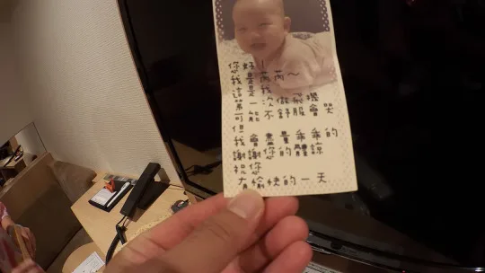
進到住宿處放下行李，徒步往晴空塔方向散步。沿途街頭隨處可見背著大背包的外國背包客，踩在東京街頭的空氣裡，出國度假的實感油然而生。
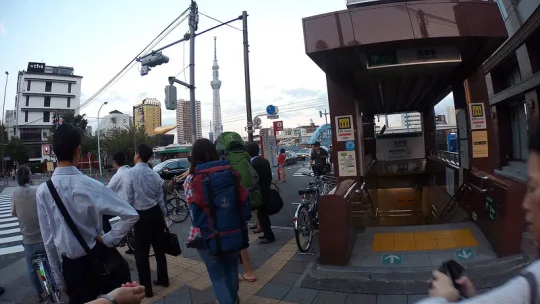
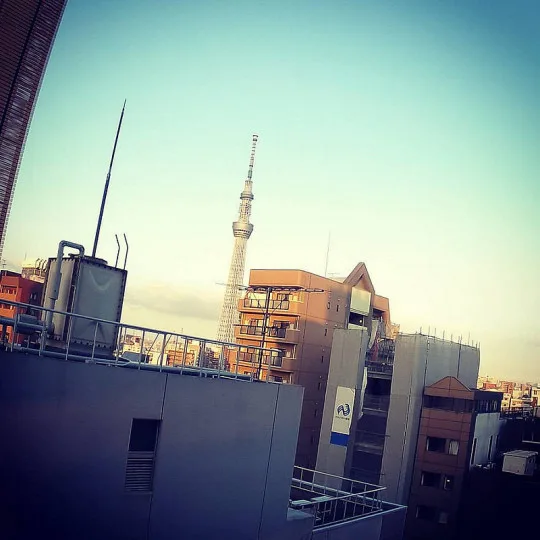
走在墨田區的住宅小巷裡，晴空塔（Skytree）就這樣巨大而安靜地插在平房與公寓的夾縫中。這種視覺反差很有趣，隨便一個轉角、一面透空的防火巷，人人都能舉起手機拍出極有張力的好照片。但轉念一想，對於每天開門倒垃圾、曬衣服都得看著這座龐然大物的在地居民來說，看久了大概就像根日常的電線桿，早就不覺得新奇了吧。
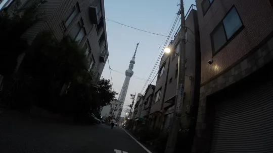
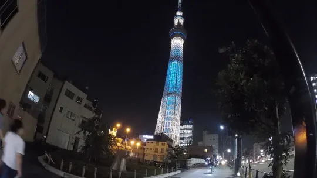
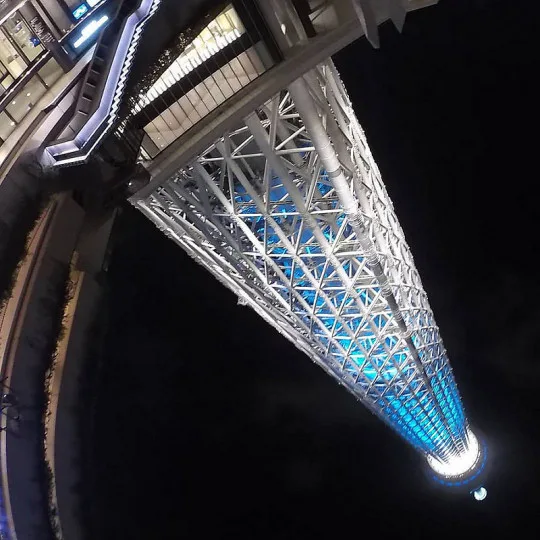
晃過一個以巨大船體為造形意象的社區休憩區，四周空曠開闊。這次出門口袋裡揣了一支水管造形的 HTC RE 盲拍相機，隨手一握、快門一按就是超廣角視野。便利性與誇張的透視感，幾乎包辦了這趟旅程絕大多數的街拍視角，讓人認真覺得下次出門旅行真的可以少背一顆笨重的超廣角單眼鏡頭。
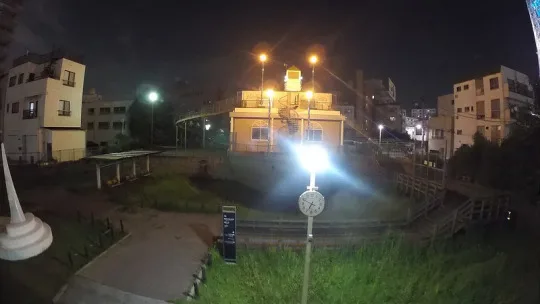
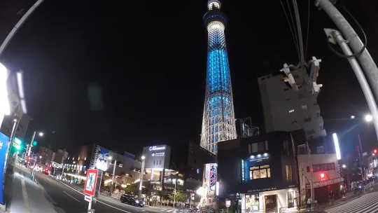
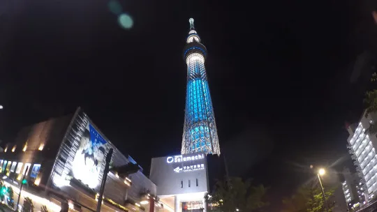
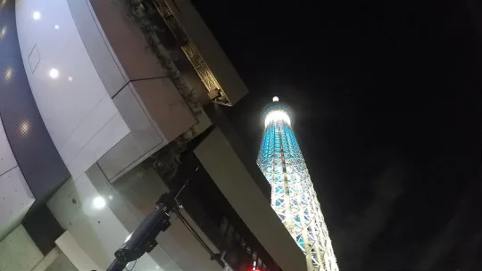
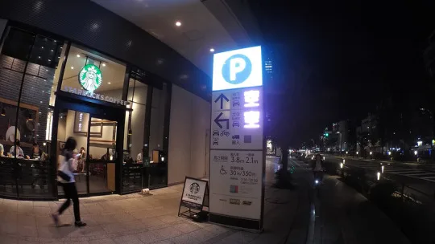
走近押上站周邊，地下與平面規劃了極其驚人的巨大立體自行車停車場，密密麻麻卻井然有序，徹底展現日本軌道交通與第一哩路銜接的強悍規劃能力。
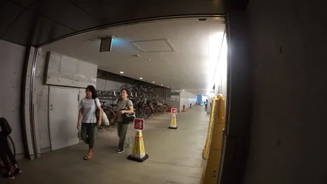
抬頭望著這座 634 公尺的高塔，忍不住暗自嘀咕：如果這樣量體的造價與工程搬到台灣，會不會又變成政客口水中被罵翻、毫無建樹的「超級大蚊子館」？反觀日本人在地盤工程與周邊施作的維護態度——平整的防塵網、精準的噪音監測、一絲不苟的交管防護，每每都是公務員出國考察（公帑玩樂）最該帶回家的基本功。
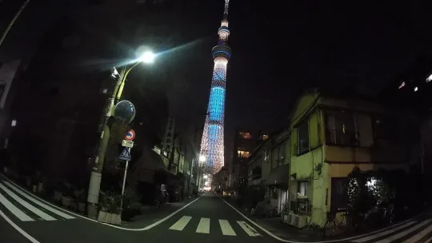
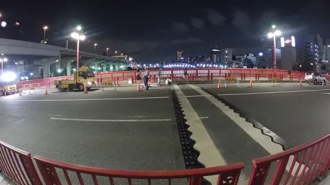
不過最諷刺的是，這趟旅程我們在它腳邊整整住了七天六夜，結果從頭到尾居然連一次展望台都沒買票上去過！住得越近，越覺得「反正隨時都能上去」，最後就這樣天天仰望著它擦身而過。
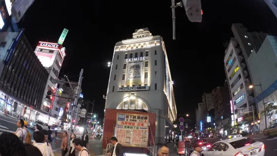
回程路上在街角看見大師浦澤直樹作品的海報，熟悉的線條瞬間勾起《20世紀少年》與《MONSTER》裡那些冷硬而龐大的世界觀——大師！這趟東京的開場，就在夜色與晴空塔的剪影中緩緩拉開序幕。
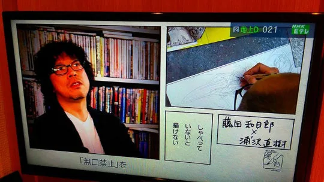